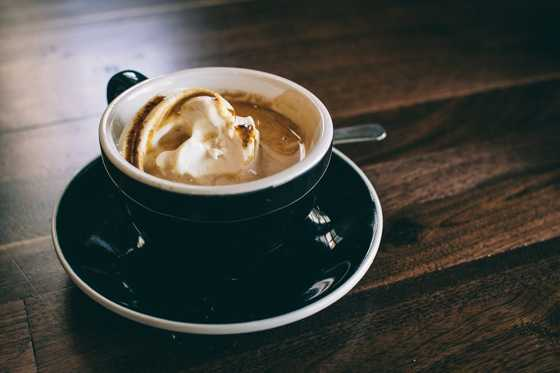
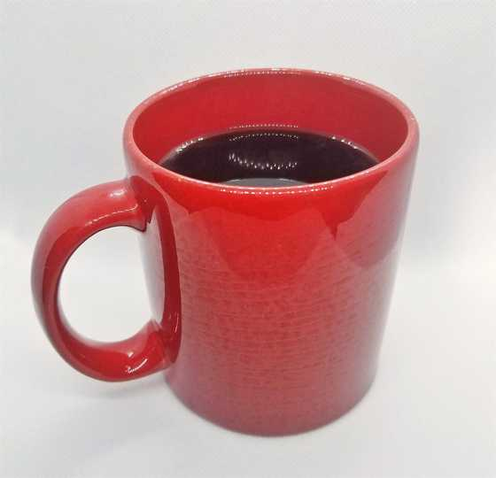
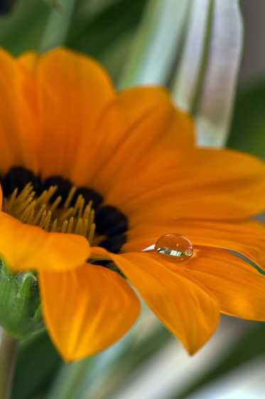
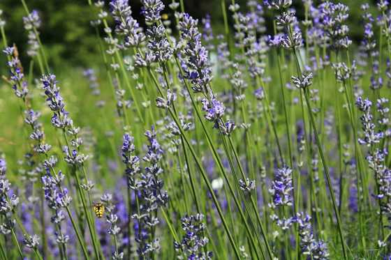

ABOUT
お店のこと
店主の小野さんは、趣味のカフェめぐりでラテアートに出会いました。約2年かけてラテアートを学び、2024年9月、地元・佐伯に店を開いています。
店名には「誰かのなんてことない1日に、ちょっとだけ色が添えられたら」という思いが込められているそうです。ラテのふわふわ感が飲み終わるまで続くことも、このお店の自慢とされています。
※上記は地域メディアの記事(2025年時点)に基づきます。現在の状況はInstagramでご確認ください。
MENU
ひと皿、ひと杯の色
記事で紹介されている内容です。価格・提供状況は準備中(変更の可能性があります)。

Cup of coffee on café table.jpg / Ssu / CC BY-SA 4.0 ラテ・コーヒー
ふわふわのラテアート。竹炭を使った真っ黒な「ブラックラテ」も紹介されています。
The cup of coffee on a wooden table (47939081677).jpg / Artem Beliaikin / CC BY 2.0 コーヒーゼリー&パンナコッタ
別々にも、一緒にも、生クリームを添えても。三通りの味わいが楽しめるスイーツ。

Black coffee cup (Unsplash).jpg / Ross Parmly / CC0 1.0 季節のスイーツ
季節のフルーツケーキなど。内容は日によって異なります。

Gray espresso cup with amaretto.jpg / Friedrich Haag / CC BY-SA 4.0 軽いお食事
数量限定のランチBOXや、パン付きのグラタンなどが紹介されています。
| 営業時間 | 準備中 |
|---|---|
| 定休日 | 準備中 |
| 価格 | 準備中 |
COLORS
色のある、ひと息





VOICE
口コミ イメージ例
以下は制作側が作成したイメージで、実在のお客様の声ではありません。
- イメージ例
ラテアートがかわいくて、飲むのがもったいない。最後までふわふわでした。
- イメージ例
ビルの2階の落ち着いた空間で、ゼリーとパンナコッタをゆっくり味わえました。
- イメージ例
ひとり席があるので、読書の合間に立ち寄りやすいです。